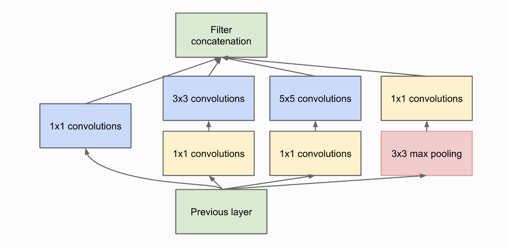
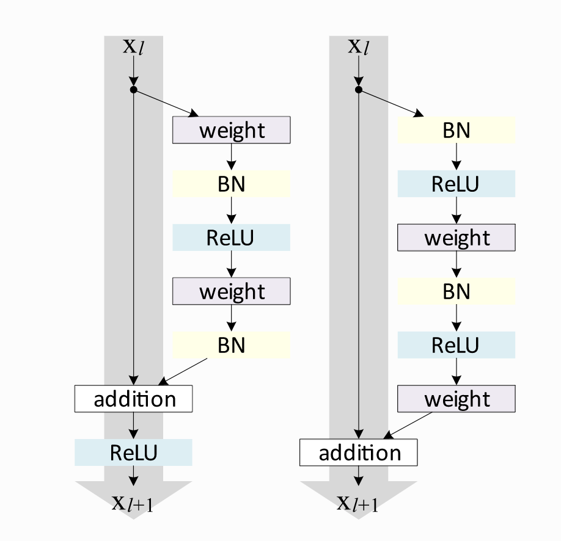

# standard librariesimport osimport numpy as npimport randomfrom PIL import Imagefrom types import SimpleNamespace# Imports for plottingimport matplotlib.pyplot as plt%matplotlib inlinefrom IPython.display import set_matplotlib_formatsset_matplotlib_formats('svg','pdf') # for exportimport matplotlibmatplotlib.rcParams['lines.linewidth'] =2.0import seaborn as snssns.reset_orig()# pytorchimport torchimport torch.nn as nnimport torch.utils.data as dataimport torch.optim as optim# Torchvisionimport torchvisionfrom torchvision.datasets import CIFAR10from torchvision import transforms
/tmp/ipykernel_48748/1860587221.py:12: DeprecationWarning: `set_matplotlib_formats` is deprecated since IPython 7.23, directly use `matplotlib_inline.backend_inline.set_matplotlib_formats()`
set_matplotlib_formats('svg','pdf') # for export
Inception Module

Inception Module
class InceptionBlock(nn.Module):def__init__(self,c_in, c_red: dict, c_out:dict, act_fn):"""_summary_ Inputs: c_in - Number of input feature maps from the previous layers c_red - Dictionary with keys "3x3" and "5x5" specifying the output of the dimensionality reducing 1x1 convolutions c_out - Dictionary with keys "1x1", "3x3", "5x5", and "max" act_fn - Activation class constructor (e.g. nn.ReLU) """super().__init__()# 1x1 convolution branchself.conv_1x1 = nn.Sequential( nn.Conv2d(c_in, c_out["1x1"],kernel_size=1), nn.BatchNorm2d(c_out["1x1"]), act_fn() )# 3x3 convolution branchself.conv_3x3 = nn.Sequential( nn.Conv2d(c_in, c_red["3x3"],kernel_size=1), nn.BatchNorm2d(c_red["3x3"]), act_fn(), nn.Conv2d(c_red["3x3"],c_out["3x3"],kernel_size=3,padding=1), nn.BatchNorm2d(c_out["3x3"]), act_fn() )# 5x5 convolution branchself.conv_5x5 = nn.Sequential( nn.Conv2d(c_in, c_red["5x5"],kernel_size=1), nn.BatchNorm2d(c_red["5x5"]), act_fn(), nn.Conv2d(c_red["5x5"],c_out["5x5"],kernel_size=5,padding=2), nn.BatchNorm2d(c_out["5x5"]), act_fn() )# Max-pool branchself.max_pool = nn.Sequential( nn.MaxPool2d(kernel_size=3,padding=1,stride=1), nn.Conv2D(c_in,c_out["max"],kernel_size=1), nn.BatchNorm2d(c_out["max"]), act_fn() )def forward(self,x): x_1x1 =self.conv_1x1(x) x_3x3 =self.conv_3x3(x) x_5x5 =self.conv_5x5(x) x_max =self.max_pool(x) x_out = torch.cat([x_1x1, x_3x3, x_5x5,x_max],dim=1)return x_out
ResNet
ResNet comes in many variants
Here we look into two variants - The original ResNet and the Pre-Activation ResNet Block
In original ResNet a non-linear activation is applied after the skip Connection
In pre-activation ResNet a non-linear activation at the beggining of F. For deep networks, this has shown to perform better as gradient flow is guaranteed to have the indentity matrix and is not harmed by any non-linear activation applied to it
We dimensions of x and f(x) should be same

Original ResNet Block
class ResNetBlock(nn.Module):def__init__(self,c_in,act_fn,subsample=False,c_out=-1):"""_summary_ Inputs: c_in - Number of input features act_fn - Activation class constructor (e.g. nn.ReLU) subsample - If True, we want to apply a stride inside the block and reduce the output shape by 2 in height and width c_out - Number of output features. Note that this is only relevant if subsample is True, as otherwise, c_out = c_in """super().__init__()ifnot subsample: c_out = c_in# Network Fself.net = nn.Sequential( nn.Conv2d(c_in,c_out,kernel_size=3,padding=1,stride=1ifnot subsample else2, bias=False), # No bias needed as the Batch Norm handles it nn.BatchNorm2d(c_out), act_fn(), nn.conv2d(c_out,c_out,kernel_size=3,padding=1, bias=False), nn.BatchNorm2D(c_out) )# 1x1 convolution with stride 2 means we take the upper left value, and transform it to new output sizeself.downsample = nn.Conv2d(c_in, c_out, kernel_size=1, stride=2) if subsample elseNonedef foward(self, x): z =self.net(x)ifself.downsample isnotNone: x =self.downsample(x) out = z + x out =self.act_fn(out)return out
class PreActResNetBlock(nn.Module):def__init__(self, c_in, act_fn, subsample=False, c_out=-1):"""_summary_ Inputs: c_in - Number of input features act_fn - Activation class constructor (e.g. nn.ReLU) subsample - If True, we want to apply a stride inside the block and reduce the output shape by 2 in height and width c_out - Number of output features. Note that this is only relevant if subsample is True, as otherwise, c_out = c_in """super().__init__()ifnot subsample: c_out = c_in# Network Fself.Net = nn.Sequential( nn.BatchNorm2d(c_in), act_fn(), nn.Conv2d(c_in, c_out, kernel_size=3, padding=1, stride=1ifnot subsample else2, bias=False), nn.BatchNorm2d(c_out), act_fn(), nn.Conv2D(c_out, c_out, kernel_size=3, padding=1, bias=False) )self.downsample = nn.Sequential( nn.BatchNorm2d(c_in), act_fn(), nn.Conv2d(c_in, c_out, kernel_size=1, stride=2, bias=False) ) if subsample elseNonedef forward(self, x): z =self.Net(x)ifself.downsample isnotNone: x =self.downsample(x) out = z+xreturn out